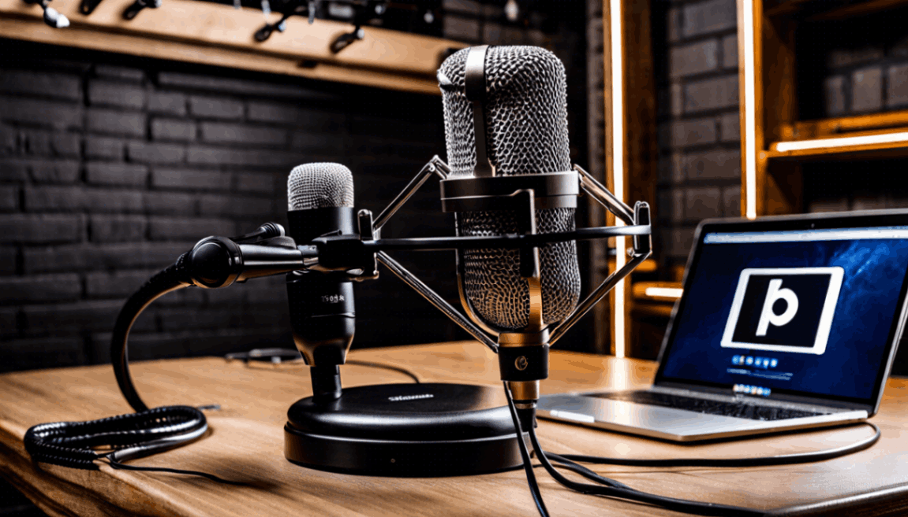
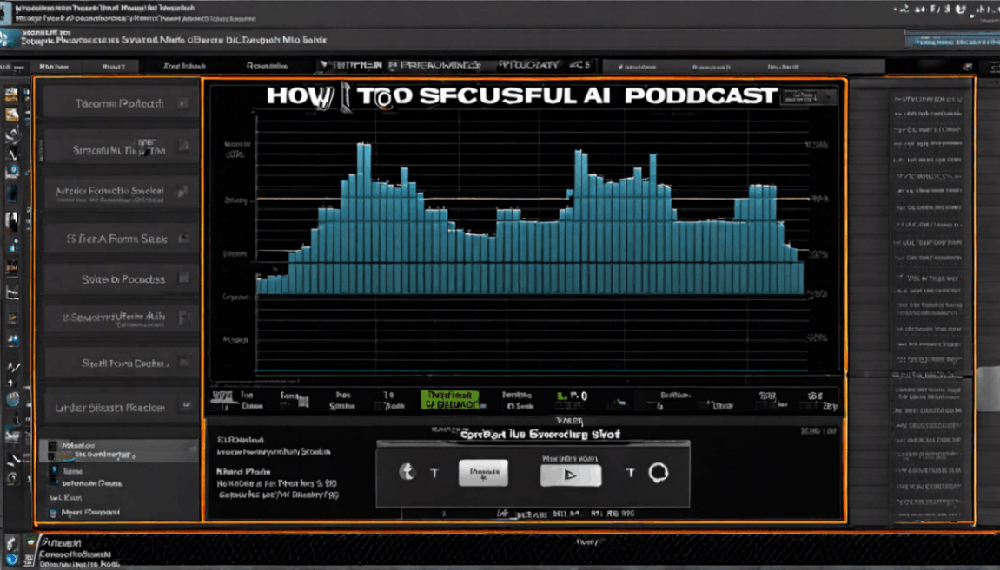
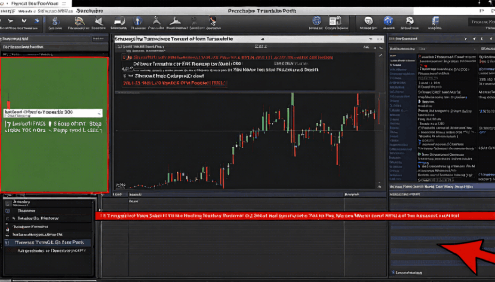
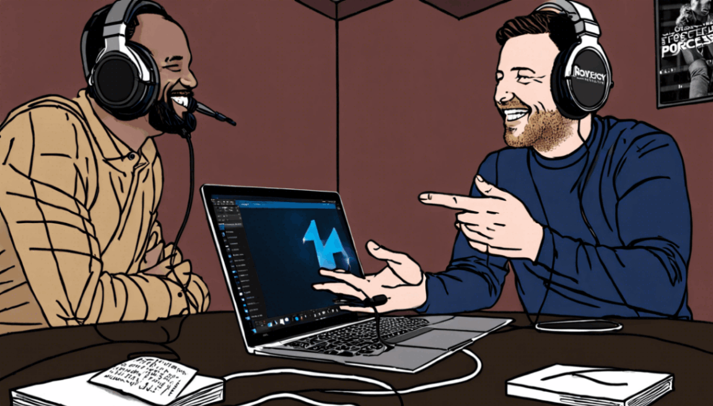

News
Harmonic Horizon Podcast and Radio Web Space
Harmonic Horizon Podcast and Radio Web Space
Streaming platforms
Production process
Audience engagement
Advertising and monetization
Trends in content creation
Streaming platforms
Streaming platforms
Spotify
Apple Podcasts
Google Podcasts
Stitcher
SoundCloud
Production process
Production process
Recording equipment
Editing software
Scriptwriting
Hosting services
Distribution channels
Audience engagement
Audience engagement
Social media promotion
Listener feedback
Live shows or events
Collaboration with other podcastsradio shows
Surveys or polls
Guides
Guides
Advertising and monetization
Sponsorship deals
Merchandising
Paid subscriptions
Crowdfunding
Ad insertion techniques
About Us
Harmonic Horizon
What is the difference between a podcast and radio show?
May 30, 2024
Podcasts and radio shows, they are not the same thing.. There are some differences between them when it comes to audience engagement, ya know?
First off, podcasts tend to have a more niche audience compared to radio shows.
What is the role of podcasts in modern media consumption?
May 30, 2024
Podcasts are playin' a significant role in modern media consumption.. They ain't just for entertainin' us, but they also be educatin' and informin'.

What is the future outlook for radio as podcasts gain popularity?
May 30, 2024
As podcasts continue to gain popularity, many people are wondering what the future holds for traditional radio stations.. Some may think that radio is a dying medium, but there are still plenty of ways for stations to stay relevant and engage with audiences in new and exciting ways.
One strategy for radio stations to remain competitive in the podcast era is to embrace the digital world.
How to Unlock the Secrets of Success with Our Exclusive Podcast and Radio Shows
May 30, 2024
So, you wanna know how to unlock the secrets of success, huh?. Well, let me tell ya, it ain't gonna happen just by sittin' around and waitin' for it to fall in your lap.

Discover the Power of Knowledge with Our Engaging Podcasts and Radio Programs
May 30, 2024
Looking for ways to access and listen to our podcasts and radio programs?. Well, you're in luck!

How to Stay Informed and Inspired Every Day with our Exceptional Podcast and Radio Content
May 30, 2024
Let's talk about the benefits of regularly consuming exceptional podcast and radio content for personal growth and development.. Listening to quality podcasts and radio shows can really help you stay informed and inspired every day.
The impact of podcasts on traditional radio broadcasting
May 30, 2024
Podcasts and radio broadcasting ain't that different, right?. They both involve sharing stories and information through audio.
How to start and grow a successful podcast
May 30, 2024
Starting and growing a successful podcast ain't easy, but with dedication and hard work, it can be done.. One key aspect to keep in mind is to continuously improve and evolve your content.

The future of audio storytelling in the digital age
May 30, 2024
In today's digital age, it can be a real challenge to keep up with the ever-evolving landscape of audio storytelling.. With so many competitors vying for attention in a crowded market, it's important to have strategies in place to stay relevant and engage audiences.
One key strategy is to constantly adapt and evolve with the changing trends in technology and audience preferences.